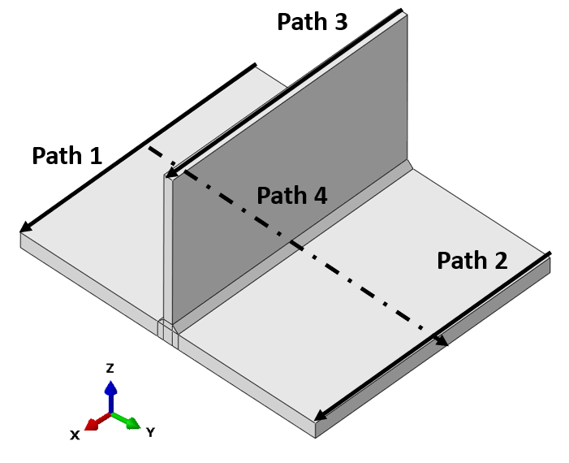
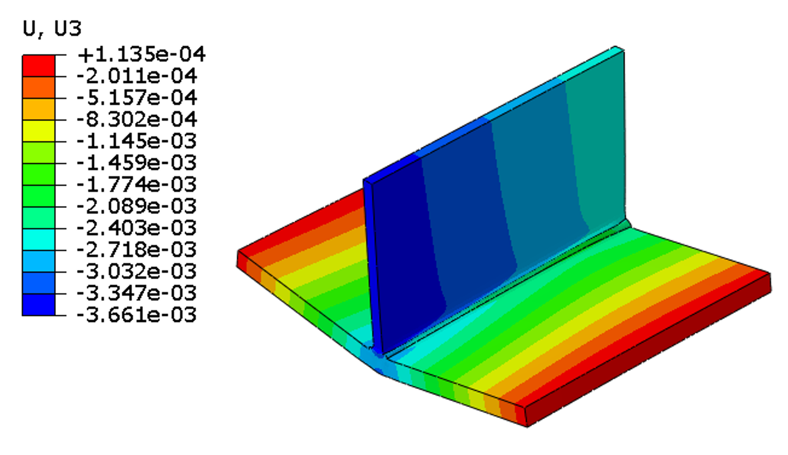
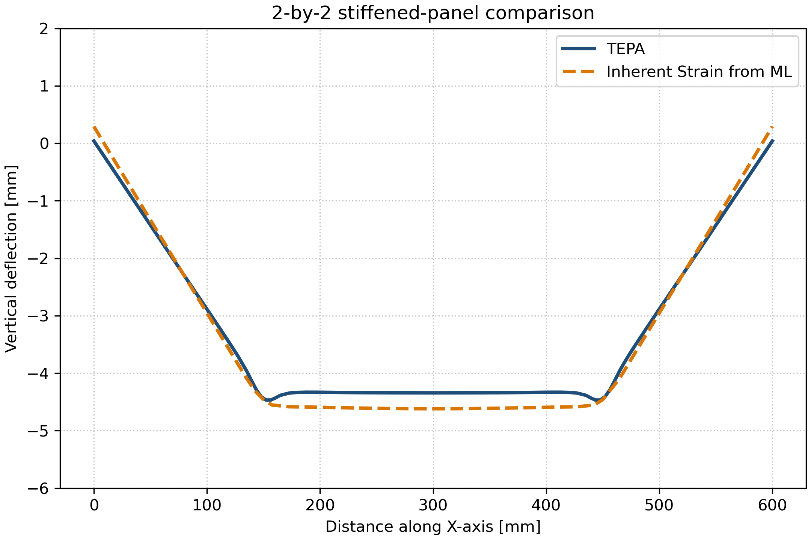
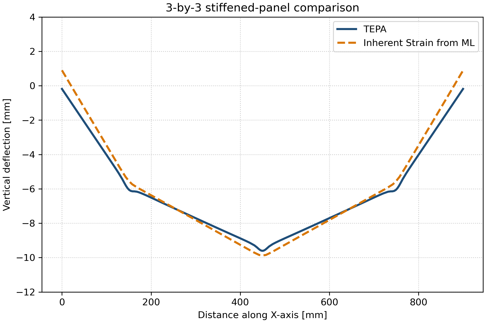
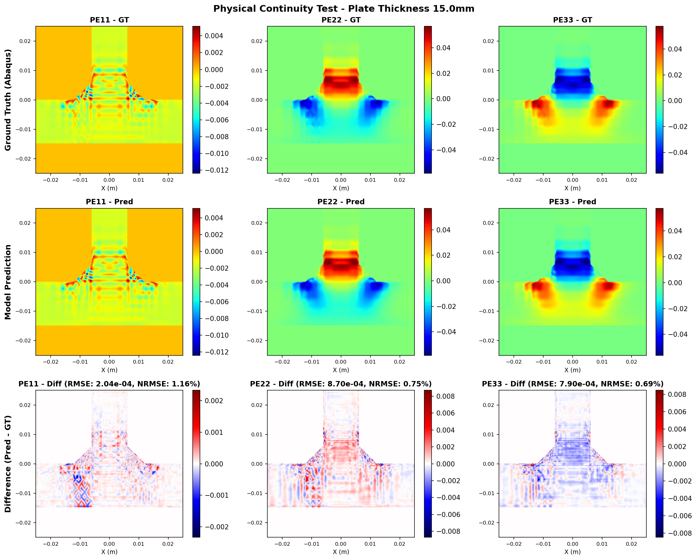

Project
DL-InSM Welding Simulation
A deep-learning inherent-strain workflow for predicting welding-induced deformation in large stiffened panels by transferring local unit-cell welding simulations into efficient global shell models.
Project Summary
This research project studies a machine-learning-assisted inherent strain method for welding distortion prediction in stiffened structures. Local thermo-elasto-plastic unit-cell simulations are used to generate high-resolution plastic strain fields, which are then learned by neural surrogate models and converted into equivalent inherent strain inputs for large elastic shell analyses.
The objective is to retain the physically meaningful local welding response from solid finite-element models while making panel-level deformation prediction fast enough for large welded structures and design iteration.
Key Results
- Converted ML-predicted unit-cell plastic strain fields into shell-model inherent strain loading for panel-level distortion analysis.
- Matched TEPA reference deformation paths with peak-normalized RMSE values of 3.19%, 3.90%, and 4.61% for unit-cell, 2-by-2, and 3-by-3 stiffened-panel cases.
- Continuity tests showed smooth error trends across dense plate-thickness variations, supporting physical consistency of the learned strain-field mapping.
- Reduced wall-clock analysis time by more than 1002x, more than 10145x, and approximately 3048x for the unit-cell, 2-by-2, and 3-by-3 cases compared with TEPA reference simulations.
Selected Figures





Code / Report
The repository is currently private and can be made public later without changing this link.